Обучение управлению командой — это практическая программа, где будущие руководители осваивают ключевые управленческие навыки, учатся выстраивать эффективные коммуникации и мотивировать сотрудников. Курсы включают современные форматы обучения, в том числе дистанционный формат, и направлены на развитие профессиональных и лидерских компетенций. Участники изучат методы мотивации персонала, освоят инструменты управления конфликтами и научатся эффективно руководить проектными и удаленными командами. Мы составили рейтинг лучших программ, которые помогают развивать навыки лидерства, формировать эффективную команду и повышать эффективность бизнеса за счет применения практических инструментов и освоения методов успешного руководства.
Информация обновлена:
ТОП онлайн-курсы обучения по управлению командой
- 🏆 Team Lead в IT — Академия Eduson (по промокоду kursy скидка 🎁 5%)
- 🏆 Управление дистанционными командами — Академия Eduson (по промокоду kursy скидка 🎁 5%)
- 🏆 MBA: Лидерство — Академия Eduson (по промокоду kursy скидка 🎁 5%)
- Управление командой — Академия Eduson (по промокоду kursy скидка 🎁 5%)
- Управление командой и бизнес-процессами для руководителей — Московская Бизнес Академия (по промокоду onlinekursy скидка 🎁 10%)
- Менеджмент PRO: Управление командой разработки — Яндекс Практикум
- Инструменты начинающего руководителя — Яндекс Практикум
- Team Lead — IT-команды — МИПО (по промокоду onlinekursy действует скидка 🎁 10% )
- Руководитель. Эффективное управление — ProductStar
- Управление командами — Skillbox
- Team Lead — OTUS
- Руководитель: команда и бизнес-процессы — Нетология
- Комплексное развитие руководителей «Лидер 360°» — Нетология
- Управление командой — Бруноям
- Искусство управлять собой и командой — Русская Школа Управления
- MBA Эксперт: Управление компанией — Русская Школа Управления
- Школа профессионального руководителя — Русская Школа Управления
- Личная эффективность и управленческие навыки — City Business School
- Soft Skills for Leads — Slurm
- Управление командой тестировщиков — Академия информационных систем
- Тимлид (Team leader) — «Специалист» при МГТУ им. Баумана
Бесплатные курсы по обучению на Тимлида
- Программист или менеджер? Всё о должности тимлида за 3 дня, бесплатно — Skillbox
- Как построить эффективную команду всего за 10 недель — Techteams.ru
Отличительные преимущества каждой дистанционной программы обучения по управлению командой
| № | Название курса и школа | Отличительные преимущества | |
|---|---|---|---|
| 🥇 | Team Lead в IT — Академия Eduson | Два официальных документа, кейсы от Яндекс, Ozon, Сбера, поддержка куратора 24/7, диплом подтверждён «Сколково». | Перейти |
| 🥈 | Управление дистанционными командами — Академия Eduson | Фокус на удалённых командах, шаблоны и чек-листы для реальной работы, диплом гос. образца, бессрочный доступ. | Перейти |
| 🥉 | MBA: Лидерство — Академия Eduson | Тренажёры лидерства и коучинга, международные преподаватели (Ицхак Адизес, Роджер Делвс), акцент на стратегическое мышление. | Перейти |
| 4 | Управление командой — Академия Eduson | Бесплатный трёхдневный пробный доступ, участие экспертов Skyeng и МТС, пожизненный доступ к материалам. | Перейти |
| 5 | Управление командой и бизнес-процессами — Московская Бизнес Академия | Гос. лицензия и международные аккредитации, компенсация до 100% стоимости, высокий процент трудоустройства (65%). | Перейти |
| 6 | Менеджмент PRO: Управление командой разработки — Яндекс Практикум | Интерактивная платформа с воркшопами, наставники-практики из IT, упор на реальные кейсы и индивидуальные консультации. | Перейти |
| 7 | Инструменты начинающего руководителя — Яндекс Практикум | Подходит новичкам, 4 воркшопа с экспертами, помощь в налоговом вычете и оплате от работодателя. | Перейти |
| 8 | Team Lead — IT-команды — МИПО | Диплом вносят в ФИС-ФРДО, акцент на практику, 94% выпускников увеличили доход, 72% перешли на новые позиции. | Перейти |
| 9 | Руководитель. Эффективное управление — ProductStar | Диплом от ProductStar и РБК, карьерное сопровождение и менторинг после обучения, преподаватели из X5, Amazon, Skyeng. | Перейти |
| 10 | Управление командами — Skillbox | Гарантия трудоустройства («или вернем деньги»), бонусный курс по ИИ, гибкий график и пожизненный доступ. | Перейти |
| 11 | Team Lead — OTUS | Практические вебинары дважды в неделю, проектная работа с ментором, доступ навсегда и помощь с собеседованиями. | Перейти |
| 12 | Руководитель: команда и бизнес-процессы — Нетология | Деловая игра и методы SIPOC, RACI, бонус-курс по тайм-менеджменту, удостоверение гос. образца. | Перейти |
| 13 | Лидер 360° — Нетология | Практические тренажёры, мгновенная обратная связь, Q&A-сессии и корпоративное обучение под задачи компании. | Перейти |
| 14 | Управление командой — Бруноям | 85% практики, персональное наставничество, карьерный центр с вакансиями и гибкий график обучения. | Перейти |
| 15 | Искусство управлять собой и командой — Русская Школа Управления | Интенсив 3 дня (24 ак. часа), формат онлайн/очно, фокус на фасилитации и коучинге для лидеров. | Перейти |
| 16 | MBA Эксперт: Управление компанией — Русская Школа Управления | Полноценная программа MBA за 12 месяцев, диплом гос. образца, практикующие эксперты по цифровой трансформации. | Перейти |
| 17 | Школа профессионального руководителя — Русская Школа Управления | Гибкие форматы (очно/онлайн/видео), бессрочный доступ и готовые шаблоны, диплом ФРДО. | Перейти |
| 18 | Личная эффективность и управленческие навыки — City Business School | Короткий курс (20 дней), диплом CBS, возможность зачёта при поступлении на MBA, 10+ тренеров международного уровня. | Перейти |
| 19 | Soft Skills for Leads — Slurm | Практика коммуникаций для тимлидов IT, обучение от действующих SRE и техдиректоров, без отрыва от работы. | Перейти |
| 20 | Управление командой тестировщиков — Академия информационных систем | Очное или дистанционное обучение 2 дня, акцент на управление QA-командой и рисками, преподаватели-CIO. | Перейти |
| 21 | Тимлид (Team Leader) — Центр «Специалист» при МГТУ им. Баумана | Крупнейшая программа (до 548 ак. часов), диплом о проф. переподготовке, реальные кейсы IT-проектов. | Перейти |
1. 🏆 Team Lead в IT – Академия Eduson
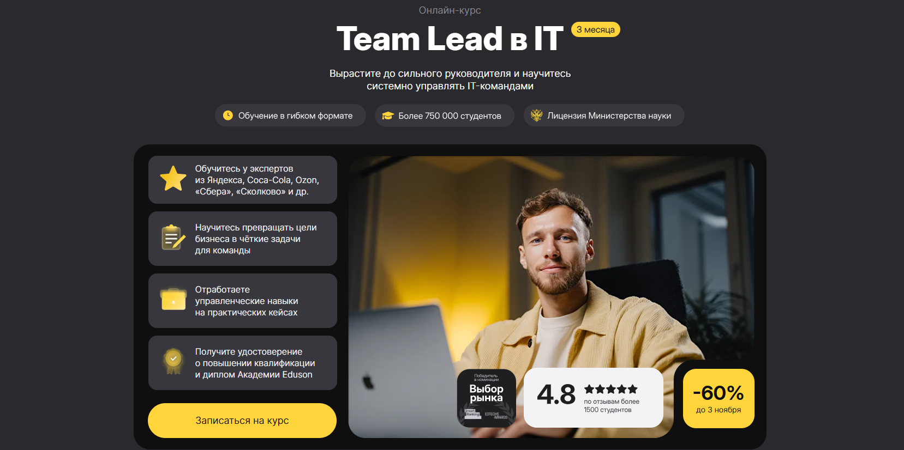
- ✅ Официальный сайт: eduson.academy
- 💸 Цена обучения: от 71 880 ₽ (скидка 60%).
- 💳 Рассрочка: беспроцентная от 5 990 ₽/мес, сроком до 12 месяцев.
- 📚 Формат: дистанционный формат, видеоуроки, практические кейсы, тесты, саммари книг и консультации с кураторами.
- ⏳ Продолжительность: 3 месяца, 72 часа образовательных материалов.
- 📜 Документ: удостоверение о повышении квалификации и диплом Академии Eduson, подтверждённый «Сколково».
- 📝 Трудоустройство: консультации по составлению резюме и актуальные вакансии на hh.ru.
- 🔷 Для кого подходит курс: для начинающих и опытных руководителей IT-команд, специалистов, желающих развить управленческие навыки и повысить эффективность проектов.
Особенности:
Программа обучения направлена на развитие управленческих навыков и освоение практических инструментов для системного управления IT-командами. Обучение проходит в дистанционном формате, что позволяет учиться в удобное время и совмещать процесс обучения с работой. Студенты научатся выстраивать эффективные коммуникации, мотивировать сотрудников и развивать ключевые компетенции лидерства. Каждый участник получает поддержку личного куратора 24/7 на протяжении 365 дней. Программа включает практические кейсы от экспертов Яндекса, Ozon, Coca-Cola и «Сбера», что помогает освоить методы эффективного руководства и научиться управлять удалёнными командами. После прохождения курса выпускники смогут создавать эффективные коллективы, улучшить навыки мотивации персонала и достигать показателей эффективности бизнеса.
Чему учатся студенты:
- Научиться эффективно управлять проектными командами и выстраивать коммуникацию;
- Освоить методы мотивации сотрудников и принципы эффективного взаимодействия;
- Применять гибкие методологии: Scrum, Kanban, Agile;
- Развивать сотрудников и управлять конфликтами в команде;
- Контролировать эффективность сотрудников и улучшать показатели продуктивности;
- Формировать стратегию развития и управлять рисками проектов;
- Создавать эффективные структуры и распределять задачи в удалённых командах.
Преподаватели:
- Эксперты из Яндекс, Coca-Cola, Ozon, Volvo, «Сбера», «Авито» и «Сколково» — опытные специалисты, которые управляют командами и внедряют современные методы мотивации и планирования.
Преимущества:
- Освоите ключевые навыки руководства и эффективного управления проектами;
- Два официальных документа по окончании курса;
- Поддержка личного куратора на всём протяжении обучения;
- Пожизненный доступ к материалам и обновлениям;
- Гибкий график занятий и дистанционный формат;
- Практические кейсы и методы мотивации персонала;
- Возможность налогового вычета 13% и беспроцентной рассрочки;
- Программа разработана с учётом требований работодателей 2025 года.
Отзывы учеников:
Студенты отмечают, что обучение помогает научиться эффективно руководить коллективом, развить навыки лидерства и применять современные инструменты управления. Отмечают удобный формат, высокое качество материалов и поддержку кураторов. Выпускники подчеркивают рост профессиональных навыков, улучшение управленческих решений и повышение эффективности работы команд. Средний рейтинг курсов — 4.8 из 5.
Перейти на официальный сайт курса2. 🏆 Управление дистанционными командами — Академия Eduson
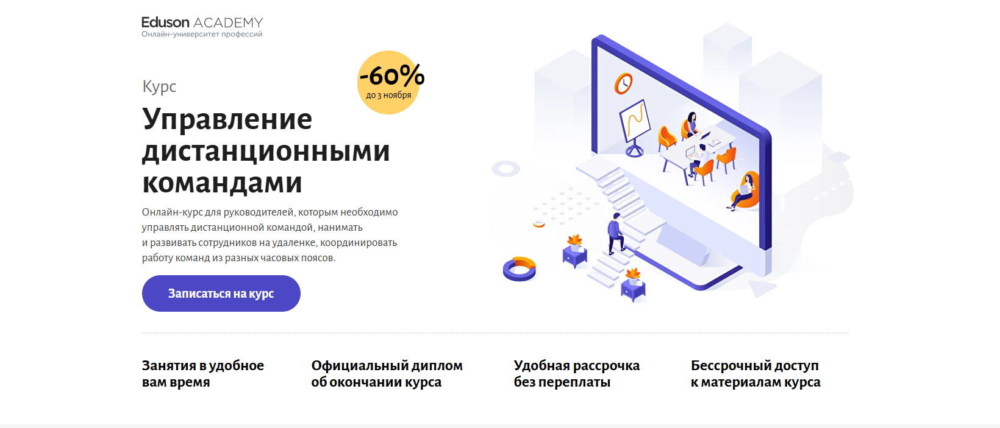- ✅ Официальный сайт: eduson.academy
- 💸 Цена обучения: от 32 000 ₽ со скидкой 60%.
- 💳 Рассрочка: от 2 666 ₽/мес на 12 месяцев без переплаты, оплата онлайн.
- 📚 Формат: дистанционный формат — видеолекции, практические задания, симуляции управленческих ситуаций, тесты и кейсы из реальной практики.
- ⏳ Продолжительность: около 1 месяца, обучение проходит в удобном темпе.
- 📜 Документ: официальный диплом о профессиональной переподготовке установленного образца.
- 📝 Трудоустройство: повышение управленческих навыков и карьерный рост в компаниях с удалёнными командами.
- 🔷 Для кого подходит курс: руководителям и менеджерам, работающим с дистанционными командами, сотрудникам, планирующим стать лидерами, и специалистам, развивающим навыки эффективного руководства.
Особенности:
Программа создана для тех, кто хочет научиться эффективно руководить удалёнными сотрудниками и развивать профессиональные навыки управления персоналом. В курсе собраны практические инструменты, которые помогают выстраивать эффективные коммуникации и повышать мотивацию сотрудников. Обучение проходит в дистанционном формате с поддержкой личного куратора, который помогает решать сложные ситуации и корректировать практические работы. Участники изучают методы мотивации, управление конфликтами и способы создания эффективной командной структуры. После окончания обучения выпускники умеют выстраивать коммуникацию между членами команды в разных часовых поясах и управлять эффективностью сотрудников без излишнего контроля.
Чему учатся студенты:
- Нанимать и мотивировать удалённых сотрудников;
- Проводить совещания и давать обратную связь;
- Организовывать работу распределённых команд и поддерживать эффективное взаимодействие;
- Развивать навыки лидерства и управления проектными командами;
- Решать конфликты и повышать продуктивность коллектива;
- Ставить цели и контролировать выполнение задач в разных форматах обучения.
Преподаватели:
- Давид Ян — серийный предприниматель, основатель ABBYY, сооснователь Yva.ai.
- Елена Коптенко — эксперт по трудовому законодательству и кадровому делопроизводству, преподаватель с 15-летним опытом.
- Дарья Дегтярева — руководитель направления подбора и адаптации сотрудников в «Экспобанке».
- Елена Ленсу — организационный консультант, экс-HRD IT-компании Pravo.Tech и агентства Rocket10.
- Анна Моносова — бизнес-тренер, консультант по корпоративному обучению и развитию команд.
Преимущества:
- Бессрочный доступ к учебным материалам и обновлениям курса;
- Практические кейсы от опытных руководителей и экспертов Eduson;
- Индивидуальный куратор на связи 7 дней в неделю;
- Диплом государственного образца, подтверждающий управленческие компетенции;
- Гибкий график обучения — занятия проходят в любое удобное время;
- Методы, которые помогают эффективно управлять дистанционными командами и мотивировать сотрудников;
- Готовые шаблоны, шпаргалки и чек-листы для ежедневного использования в работе.
Отзывы учеников:
Студенты отмечают высокий уровень преподавателей, удобный дистанционный формат и практическую направленность программы. Многие подчеркивают, что обучение помогает развить управленческие навыки, научиться выстраивать эффективные коммуникации и повысить мотивацию персонала. Выпускники отмечают улучшение производительности команд и уверенность в роли руководителя.
Перейти на официальный сайт курса3. 🏆 MBA: Лидерство — Академия Eduson
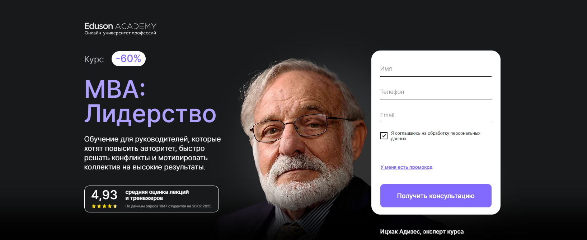- ✅ Официальный сайт: eduson.academy
- 💸 Цена обучения: от 90 000 ₽ (со скидкой 60%).
- 💳 Рассрочка: от 7 500 ₽/мес на 12 месяцев, оформление онлайн без визита в офис.
- 📚 Формат: дистанционный формат: 140 видеолекций, практические задания, онлайн-тренажёры, обратная связь и индивидуальная консультация с экспертом.
- ⏳ Продолжительность: 81 час учебных материалов.
- 📜 Документ: удостоверение о повышении квалификации установленного образца.
- 📝 Трудоустройство: индивидуальные рекомендации по развитию карьеры и управлению командой.
- 🔷 Для кого подходит курс: для руководителей, HR-специалистов, менеджеров проектов и всех, кто хочет повысить управленческие навыки и эффективно руководить коллективом.
Особенности:
Программа создана для опытных руководителей, стремящихся развить навыки лидерства и научиться эффективно управлять коллективом. В курс входят тренажёры по управлению конфликтами и методам мотивации сотрудников, а также практические инструменты для формирования сильной команды. Обучение проходит онлайн, что удобно для занятых специалистов. Студенты развивают профессиональные навыки управления, изучают современные подходы к мотивации персонала и выстраиванию коммуникаций в дистанционных командах. По завершении курса участники смогут уверенно управлять проектами и достигать стратегических целей бизнеса.
Чему учатся студенты:
- Формировать и мотивировать эффективную команду
- Применять методы управления и коучинга для развития сотрудников
- Эффективно руководить дистанционными командами
- Использовать ключевые инструменты для решения конфликтов
- Развивать управленческие и профессиональные навыки
- Анализировать показатели эффективности и повышать продуктивность бизнеса
Преподаватели:
- Ицхак Адизес — основатель Института Адизеса, один из ведущих экспертов в области менеджмента
- Роджер Делвс — заместитель декана и преподаватель дисциплины «Методы лидерства» бизнес-школы Hult Ashridge
- Борис Фёдоров — руководитель отдела развития дистанционных сервисов Газпромбанка
- Алёна Владимирская — ex-Head of Recruitment в Mail.Ru Group
- Давид Ян — предприниматель в области технологий искусственного интеллекта
- Максим Поташев — глава RP Consulting, магистр игры «Что? Где? Когда?»
Преимущества:
- Практические кейсы и реальные бизнес-задачи
- Дистанционное обучение с доступом навсегда
- Персональная консультация с экспертом в подарок
- Современные методы и инструменты управления
- Сильный преподавательский состав из практиков международного уровня
- Гибкий график обучения и доступ с любых устройств
- Диплом установленного образца после окончания обучения
Отзывы учеников:
Студенты Академии Eduson отмечают высокое качество обучения и полезные практические задания. Особенно хвалят дистанционный формат, который позволяет совмещать учебу с работой. По отзывам выпускников, курс помогает улучшить навыки коммуникации, научиться эффективно управлять командой и мотивировать сотрудников на результат. Средний рейтинг курса — 4.9 из 5.
Перейти на официальный сайт курса4. Управление командой — Академия Eduson
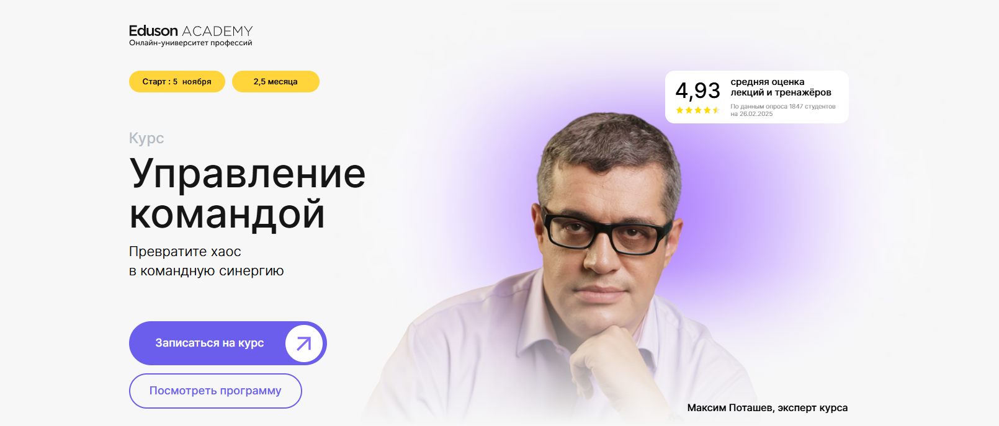- ✅ Официальный сайт: eduson.academy
- 💸 Цена: от 55 600 ₽, при единовременной оплате — скидка 5%.
- 💳 Рассрочка: от 4 633 ₽/мес на 12 месяцев без переплат.
- 📚 Формат: дистанционный формат — видеолекции, практические кейсы, домашние задания, конспекты, чек-листы и обратная связь от экспертов.
- ⏳ Продолжительность: индивидуальный темп, старт обучения — 5 ноября.
- 📜 Документ: удостоверение о повышении квалификации установленного образца.
- 📝 Трудоустройство: профессиональное сопровождение и консультация эксперта по развитию карьеры.
- 🔷 Для кого подходит курс: для менеджеров, руководителей отделов, HR-специалистов и тех, кто хочет эффективно управлять командой и повышать мотивацию сотрудников.
Особенности:
Программа разработана для тех, кто стремится освоить управленческие навыки и научиться эффективно руководить сотрудниками в любых условиях, включая дистанционный формат. Студенты изучают методы мотивации персонала, способы управлять конфликтами и поддерживать эффективную командную работу. Обучение строится на бизнес-кейсах и реальных примерах, что позволяет закрепить практические навыки и применять их сразу. Курс помогает развивать ключевые навыки лидерства, выстраивать коммуникации и повышать эффективность сотрудников. Доступ к материалам сохраняется навсегда, что обеспечивает постоянное совершенствование.
Чему учатся студенты:
- Эффективно управлять коллективом и повышать мотивацию сотрудников
- Научиться выстраивать продуктивные коммуникации и взаимодействие
- Развивать сотрудников и формировать сильную команду
- Применять методы управления дистанционными командами
- Решать конфликты и поддерживать эффективное взаимодействие
- Развивать навыки лидерства и управлять проектами
- Использовать практические инструменты для повышения эффективности бизнеса
Преподаватели:
- Екатерина Ковалевская — HR Business Partner в GeekBrains, Senior HR Manager в Delivery Club, Head of Recruitment в МТС.
- Элизабет Сандерс — тренер по тайм-менеджменту, автор книг «The 3 Secrets to Effective Time Investment» и «Divine Time Management».
- Юлия Цапкова — лидер HR-комьюнити Skolkovo Technopark, автор телеграм-канала HR SK.
- Серафима Шумеева — руководитель отдела подбора и адаптации сотрудников Skyeng.
- Роджер Делвс — директор онлайн-программы по менеджменту в бизнес-школе Эшридж (Великобритания).
- Ицхак Адизес — мировой эксперт по управлению, профессор Стэнфордского университета, основатель Института Адизеса.
- Максим Поташев — бизнес-тренер, автор книг «Путь решения» и «Правила команды. Искусство думать вместе».
Преимущества:
- Освоите ключевые навыки эффективного руководства и мотивации персонала
- Дистанционный формат позволяет совмещать обучение с работой
- Курс основан на опыте опытных экспертов из ведущих компаний
- Вы научитесь управлять конфликтами и создавать эффективные коллективы
- Получите практические инструменты и реальные бизнес-кейсы
- Доступ к материалам и обновлениям курса сохраняется навсегда
- Индивидуальная консультация и поддержка куратора
- Возможность начать обучение без рисков — бесплатный доступ на 3 дня
Отзывы учеников:
Студенты Академии Eduson отмечают удобный дистанционный формат, качественные видеолекции и насыщенные практические задания. Многим курс помог развить управленческие навыки, научиться выстраивать эффективную коммуникацию и мотивировать сотрудников. Отмечают компетентность преподавателей, актуальность программы и доступную обратную связь, которая помогает стать уверенным руководителем и применять знания на практике.
Перейти на официальный сайт курса5. Управление командой и бизнес-процессами для руководителей — Московская Бизнес Академия
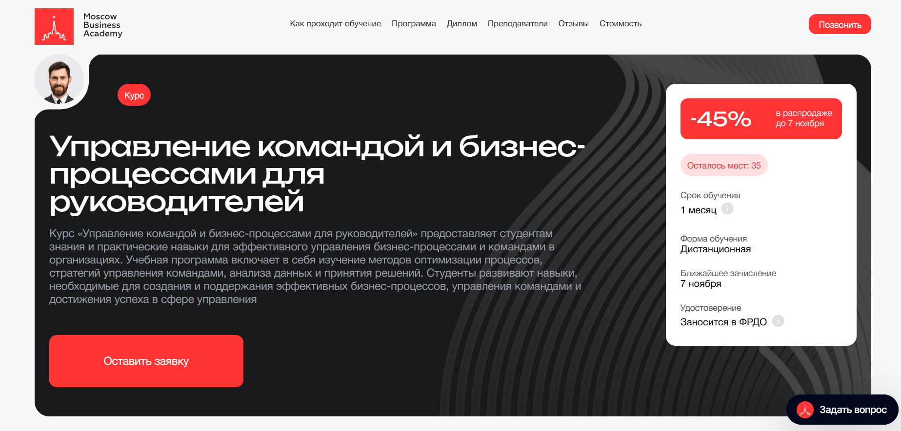- ✅ Официальный сайт: moscow.mba
- 💸 Стоимость обучения: 57 750 ₽ (со скидкой 45%)
- 💳 Рассрочка: 3 208 ₽ / мес на 18 месяцев без переплаты или оплата сразу — 57 750 ₽
- 📚 Формат: дистанционный формат — видеоуроки, практические задания, обратная связь от преподавателей, поддержка кураторов
- ⏳ Продолжительность: 1 месяц
- 📜 Документ: удостоверение о повышении квалификации и сертификат, заносится в ФРДО
- 📝 Трудоустройство: 65% выпускников находят работу через 3 месяца после окончания курса
- 🔷 Для кого подходит курс: руководителям, предпринимателям и менеджерам, которые хотят эффективно руководить командой и повысить производительность своего бизнеса
Особенности:
Обучение проходит в удобном дистанционном формате, что позволяет изучать материалы в любое время и из любой точки мира. Программа разработана на основе актуальных методов управления персоналом и оптимизации процессов. Студенты освоят инструменты эффективных коммуникаций и мотивации сотрудников, научатся управлять конфликтами и повышать эффективность работы команд. Обучение ведут опытные эксперты с многолетней практикой в бизнесе. После окончания программы участники смогут выстраивать эффективные рабочие структуры и применять практические инструменты для достижения целей компании. Программа аккредитована и соответствует государственным требованиям повышения квалификации.
Чему учатся студенты:
- Осваивают методы оптимизации и автоматизации бизнес-процессов
- Изучают управление командами и развитие навыков лидерства
- Научаются эффективно руководить и мотивировать персонал
- Развивают практические навыки управления изменениями и конфликтами
- Осваивают методы стратегического планирования и оценки эффективности
Преподаватели:
- Дмитрий Губарев — предприниматель, бизнес-консультант, эксперт в области финансового анализа и операционной эффективности, магистр экономики, аспирант РЭУ им. Г.В. Плеханова, автор научных публикаций.
Преимущества:
- Современные методы обучения на основе реальных кейсов и проектов
- Поддержка кураторов и обратная связь от преподавателей
- Дистанционный формат с возможностью совмещать обучение с работой
- Компенсация до 100% по программе привилегий
- Возврат стоимости в течение 14 дней при отказе от обучения
- Государственная лицензия №041221 и международные аккредитации ECICEL, ELQN, РАБО, НАСДОБР
- Обновленная в 2025 году программа с актуальными инструментами управления
Отзывы учеников:
Студенты Московской Бизнес Академии отмечают высокое качество материалов и практическую направленность занятий. Многие отмечают, что обучение помогает развить управленческие навыки и эффективно взаимодействовать с коллективом. Отдельно подчеркивают удобный формат и поддержку преподавателей, которые мотивируют и помогают достичь результатов в работе.
Перейти на официальный сайт курса6. Менеджмент PRO: Управление командой разработки — Яндекс Практикум
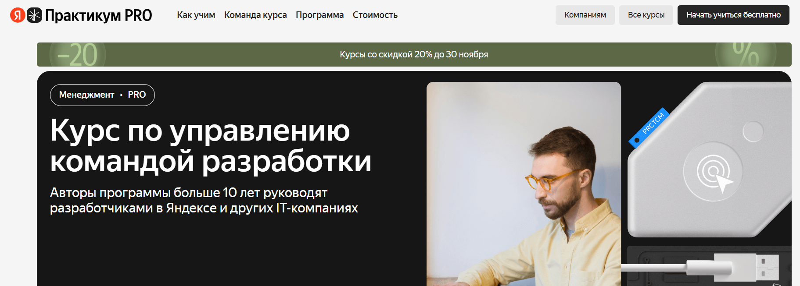- ✅ Официальный сайт: practicum.yandex.ru
- 💸 Цена: от 113 600 ₽ со скидкой 20%.
- 💳 Рассрочка: доступна от 4 637 ₽/мес, с возможностью гибкого графика платежей.
- 📚 Формат: дистанционный формат обучения — интерактивная платформа, воркшопы, практические задания, индивидуальные консультации и тесты.
- ⏳ Продолжительность: 5 месяцев.
- 📜 Документ: сертификат о прохождении курса.
- 📝 Трудоустройство: повышение квалификации и развитие управленческих навыков для карьерного роста.
- 🔷 Для кого подходит курс: для руководителей команд разработки, тимлидов, менеджеров IT-проектов, аналитиков, DevOps-инженеров и разработчиков, стремящихся стать успешными лидерами.
Особенности:
Программа направлена на развитие управленческих навыков и формирование эффективной командной работы. Студенты научатся выстраивать эффективные коммуникации, использовать методы мотивации персонала и развивать навыки лидерства. Обучение проходит в дистанционном формате, что позволяет совмещать учебу и работу. В программе предусмотрены воркшопы, консультации и работа с реальными кейсами. Участники освоят инструменты стратегического планирования и научатся эффективно руководить коллективом, развивая ключевые навыки успешного руководства. Курс помогает выстраивать коммуникацию внутри коллектива, улучшать мотивацию сотрудников и повышать эффективность бизнеса. Опытные наставники помогают оценить компетенции сотрудников и применять современные методы управления дистанционными командами.
Чему учатся студенты:
- Научатся эффективно управлять командами и проектами;
- Освоят методы мотивации сотрудников и эффективного взаимодействия;
- Разовьют навыки лидерства и стратегического планирования;
- Смогут выстраивать коммуникацию и решать конфликты в команде;
- Получат практические инструменты управления и делегирования задач;
- Научатся создавать эффективную структуру команды и развивать сотрудников.
Преподаватели:
- Виктор Цветков — Старший технический директор Газпромбанка, более 20 лет опыта в IT и руководстве командами.
- Антон Жулитов — Архитектор ПО, 15+ лет управленческого опыта, работал в Тинькофф, Deutsche Bank и Grid Dynamics.
- Дарья Линник — Руководитель разработки в Align Technology, более 20 лет в разработке и управлении.
- Андрей Пронин — Руководитель студии заказной разработки, 16+ лет опыта, наставник Яндекс Практикума.
Преимущества:
- Развитие управленческих навыков и навыков лидерства на практике;
- Дистанционный формат с гибким графиком обучения;
- Индивидуальные консультации от опытных руководителей;
- Практические навыки через воркшопы и реальные кейсы;
- Современные методы мотивации сотрудников и построения эффективных коммуникаций;
- Применение полученных знаний в работе уже во время обучения;
- Помощь наставников и кураторов в развитии профессиональных компетенций.
Отзывы учеников:
Студенты Яндекс Практикума отмечают высокое качество материалов, удобный формат обучения и практическую направленность программы. Особенно ценят индивидуальный подход, участие опытных руководителей и реальные рабочие кейсы. Многие выпускники подчеркивают, что курс помогает развить управленческие навыки, научиться эффективно руководить командой и повысить личную эффективность.
Перейти на официальный сайт курса7. Инструменты начинающего руководителя — Яндекс Практикум
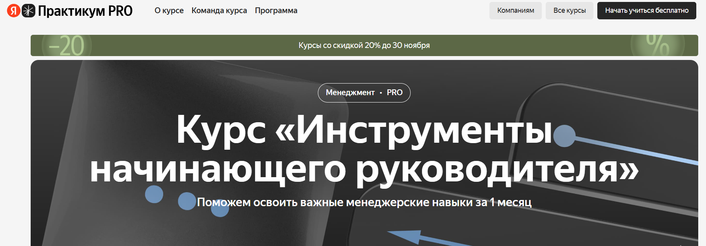- ✅ Официальный сайт: practicum.yandex.ru
- 💸 Цена: от 26 800 ₽ с учётом скидки 20%.
- 💳 Рассрочка: от 1 093 ₽ в месяц на 36 месяцев, есть оплата через работодателя или ИП.
- 📚 Формат: дистанционный формат — интерактивные уроки, домашние задания с проверкой, 4 воркшопа с экспертами, поддержка наставников и ревьюеров.
- ⏳ Продолжительность: 1 месяц, 5 часов в неделю.
- 📜 Документ: свидетельство об обучении после успешного завершения курса.
- 📝 Трудоустройство: помощь с оформлением налогового вычета и консультации по профессиональному росту.
- 🔷 Для кого подходит курс: для начинающих руководителей, специалистов, планирующих стать менеджерами, и тех, кто хочет развить управленческие навыки и эффективно руководить коллективом.
Особенности:
Программа помогает освоить управленческие навыки и эффективные коммуникации для построения сильной команды. Студенты научатся мотивировать сотрудников, управлять конфликтами и выстраивать эффективные рабочие процессы. Курс объединяет теорию и практику, формируя умение научиться эффективно руководить и контролировать задачи. Благодаря дистанционному формату можно проходить обучение в любое удобное время. Участники освоят инструменты лидерства, методы мотивации персонала и принципы построения эффективных команд. Программа развивает навыки лидерства и помогает поддерживать эффективную коммуникацию между членами коллектива. После прохождения курса слушатели смогут эффективно управлять удаленной командой и оценивать эффективность сотрудников.
Чему учатся студенты:
- Ставить понятные и измеримые цели по SMART;
- Делегировать и контролировать задачи без потери качества;
- Выстраивать коммуникацию и эффективное взаимодействие в коллективе;
- Использовать методы мотивации и развивать сотрудников;
- Применять современные инструменты управления и развивать навыки руководства.
Преподаватели:
- Наставники — действующие руководители, управляют командами и делятся практическим опытом;
- Ревьюеры — опытные специалисты, дают индивидуальную обратную связь и рекомендации;
- Кураторы — эксперты в области управления персоналом и проектных команд.
Преимущества:
- Курс проходит онлайн, подходит для дистанционного обучения с гибким графиком;
- В программе только практические инструменты и реальные кейсы;
- Наставники — опытные руководители, которые помогают развить профессиональные навыки;
- Программа формирует ключевые навыки лидерства и управления командой;
- Методы обучения помогают научиться эффективно управлять сотрудниками и мотивировать персонал;
- Есть возможность вернуть налоговый вычет до 4 355 ₽ и оплатить обучение частями;
- После окончания обучения слушатели повышают личную эффективность и уверенность в роли руководителя.
Отзывы учеников:
Студенты отмечают удобный дистанционный формат и практическое обучение. Отмечают, что курс помогает развить управленческие навыки и уверенно руководить командой. Положительно оценивают работу наставников, хорошую обратную связь и полезные практические задания. Многие отмечают рост мотивации сотрудников и улучшение эффективности бизнеса после прохождения курса.
Перейти на официальный сайт курса8. Team Lead — IT-команды — Московский институт профессионального образования (МИПО)
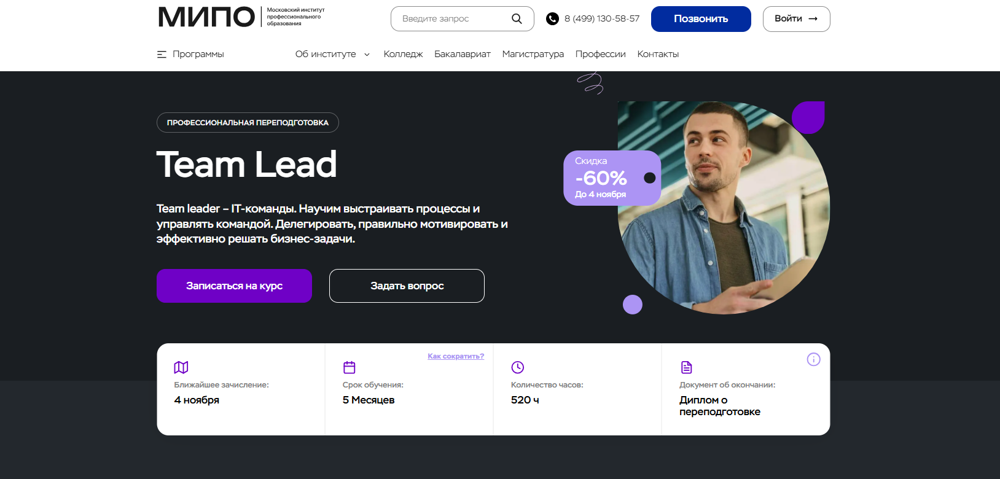- ✅ Официальный сайт: mipo.msk.ru
- 💸 Цена: 38 200 ₽ (со скидкой 60%, полная стоимость 95 480 ₽).
- 💳 Рассрочка: беспроцентная рассрочка до 24 месяцев, от 1 592 ₽ в месяц.
- 📚 Формат: дистанционный формат обучения — онлайн-вебинары, разборы кейсов, тесты, практические задания, видеоматериалы, обратная связь от кураторов.
- ⏳ Продолжительность: 5 месяцев (520 академических часов).
- 📜 Документ: диплом о профессиональной переподготовке с внесением данных в Федеральный реестр ФИС-ФРДО.
- 📝 Трудоустройство: выпускники получают документ, котирующийся в России и за рубежом; по опросам, 72% студентов перешли в более престижные компании, 94% повысили доход.
- 🔷 Для кого подходит курс: Middle и Senior разработчикам, начинающим тимлидам и руководителям с опытом, стремящимся повысить управленческие навыки и мотивацию персонала.
Особенности:
Программа помогает освоить ключевые управленческие навыки и методы мотивации сотрудников, необходимые для эффективного руководства IT-командой. Обучение проходит в удобном дистанционном формате с возможностью совмещать его с работой. Студенты научатся эффективно управлять процессами, выстраивать коммуникацию и формировать эффективную команду. Благодаря поддержке кураторов и преподавателей с международным опытом обучение проходит с максимальной вовлеченностью. Форматы обучения включают практические инструменты и реальные кейсы, позволяющие применять полученные знания сразу на практике. После окончания курса выпускники получают диплом, подтверждающий их компетенции в сфере управления и лидерства.
Чему учатся студенты:
- Научиться эффективно руководить командой и развивать сотрудников
- Управлять конфликтами и повышать эффективность взаимодействия
- Освоить методы мотивации персонала и построения сильных коллективов
- Развить навыки лидерства и стратегического планирования
- Выстраивать эффективные коммуникации и управлять проектом
- Применять современные методы оценки эффективности сотрудников
- Создавать эффективные системы мотивации и контроля задач
Преподаватели:
- Катаниди Валентина — бизнес-тренер компании Hoff, член Ассоциации карьерного консультирования, более 3500 часов тренингов по развитию soft skills.
- Шам Ангелина — кандидат химических и психологических наук, бизнес-психолог, автор бестселлера «Ангел влияния», член Ассоциации спикеров СНГ.
- Зеленская Татьяна — бизнес-консультант, эксперт по управлению и созданию команд, более 15 лет опыта работы с руководителями крупнейших компаний.
- Королева Елена — практикующий психолог, эксперт по управлению конфликтами, стрессами и временем, обладатель MBA Warwick Business School (Великобритания).
Преимущества:
- Обучение проходит полностью онлайн в удобное для студента время
- Курс помогает освоить ключевые навыки управления и лидерства
- Диплом государственного образца вносится в Федеральный реестр ФИС-ФРДО
- Возможность совмещать обучение с работой без потери эффективности
- Поддержка опытных кураторов и преподавателей-практиков
- Разбор реальных кейсов из проектных команд
- Программа помогает улучшить мотивацию сотрудников и эффективность бизнеса
- Высокие результаты выпускников — рост дохода и карьерное продвижение
Отзывы учеников:
Студенты МИПО отмечают качественный дистанционный формат, удобный график обучения и внимательную работу кураторов. Среди плюсов чаще всего упоминают практические задания, помощь преподавателей и возможность применять знания на реальных проектах. Многие выпускники отмечают, что курс помог им повысить производительность команды и уверенно руководить коллективом.
Перейти на официальный сайт курса9. Руководитель. Эффективное управление — школа ProductStar
- ✅ Официальный сайт: productstar.ru
- 💸 Цена: 96 600 ₽ (скидка до 57%, полная стоимость — 201 250 ₽).
- 💳 Рассрочка: беспроцентная до 36 месяцев от 4 025 ₽/мес.
- 📚 Формат: дистанционный формат — видеоуроки, практические задания, кейсы, тесты и дипломный проект.
- ⏳ Продолжительность: 4 месяца.
- 📜 Документ: диплом о профессиональной переподготовке от ProductStar и РБК.
- 📝 Трудоустройство: Центр карьеры помогает составить резюме, подобрать вакансии и провести консультации после окончания обучения.
- 🔷 Для кого подходит курс: для специалистов, желающих развить управленческие навыки, научиться эффективно руководить и повышать мотивацию сотрудников.
Особенности:
Программа направлена на развитие управленческих и профессиональных навыков в дистанционном формате. Студенты осваивают методы мотивации персонала, учатся выстраивать эффективные коммуникации и управлять командой для достижения ключевых целей бизнеса. Обучение построено поэтапно: от основ менеджмента до масштабирования проектов. Контент основан на практических инструментах и кейсах, которые помогают развивать навыки лидерства и эффективных коммуникаций. После курса участники смогут эффективно руководить коллективами, оценивать эффективность сотрудников и применять современные методы управления. Школа ProductStar создает условия для карьерного роста и профессионального развития.
Чему учатся студенты:
- Научиться эффективно управлять командами и проектами
- Освоить инструменты стратегического планирования и оценки эффективности
- Развивать сотрудников и повышать их мотивацию
- Формировать эффективную командную работу и распределять задачи
- Применять практические методы управления конфликтами и коммуникациями
- Создавать стратегии развития компании и поддерживать эффективность бизнеса
Преподаватели:
- Арслан Разыков — x-CPO X5 Group
- Андрей Менде — Product Owner Booking, основатель тренажера ProductDo
- Роман Абрамов — ex-Product Director Т-Банк
- Тимур Хайруллин — CEO ETHR
- Анна Атласова — Business Intelligence Analyst, Amazon Business
- Михаил Карпов — ex-CPO Skyeng
Преимущества:
- Практические знания от опытных экспертов из ведущих компаний
- Развитие ключевых навыков руководства и лидерства
- Современные методы мотивации персонала и эффективного взаимодействия
- Дистанционный формат обучения с гибким графиком
- Реальные кейсы и практические задания по управлению командами
- Поддержка кураторов и карьерное сопровождение после завершения курса
- Развитие навыков управления конфликтами и повышения эффективности сотрудников
- Актуальные инструменты для успешного руководства и профессионального роста
Отзывы учеников:
Выпускники отмечают, что обучение помогает развить навыки руководства, мотивации сотрудников и эффективных коммуникаций. Студенты ProductStar ценят практический подход, опыт преподавателей и возможность научиться эффективно управлять командами. Многие говорят, что уже во время прохождения курсов получили повышение и улучшили результаты своих проектов.
Перейти на официальный сайт курса10. Управление командами – Skillbox
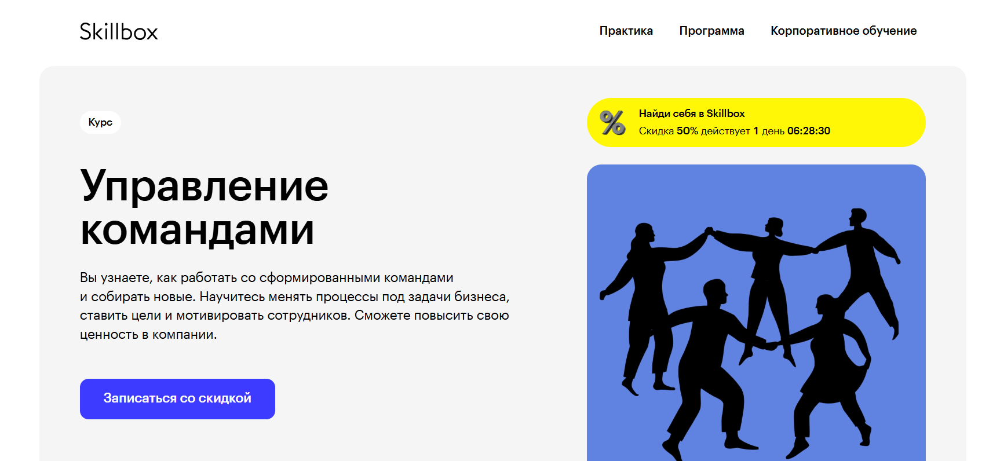- ✅ Официальный сайт: skillbox.ru
- 💸 Цена обучения: от 67 512 ₽ (скидка до 50%).
- 💳 Рассрочка: от 5 626 ₽/мес на 12 месяцев без переплат.
- 📚 Формат: дистанционный формат — видеолекции, практические задания, тесты, итоговые проекты и обратная связь от кураторов.
- ⏳ Продолжительность: 2 месяца.
- 📜 Документ: сертификат установленного образца по государственной лицензии №Л035−1 298−77/179 609.
- 📝 Трудоустройство: помощь в поиске работы, консультации, возможность получить возврат средств по акции «Поможем найти работу или вернем деньги».
- 🔷 Для кого подходит курс: менеджерам, начинающим руководителям, специалистам без управленческого опыта и опытным управленцам, желающим улучшить управленческие навыки и повысить эффективность команды.
Особенности:
Программа направлена на развитие ключевых управленческих навыков и навыков лидерства, необходимых для успешного руководства командами в компаниях любого масштаба. Студенты научатся выстраивать эффективные коммуникации и применять современные методы мотивации персонала. Курс помогает освоить инструменты управления конфликтами, научиться эффективно руководить дистанционными командами и формировать продуктивное взаимодействие внутри коллектива. Благодаря практическим заданиям участники получат навыки стратегического планирования, смогут научиться управлять проектами и повысить эффективность сотрудников. Форматы обучения разработаны с учетом гибкого графика — занятия проходят онлайн, что позволяет совмещать учебу с работой. По окончании обучения выпускники смогут успешно руководить коллективами и развивать профессиональные навыки для роста карьеры.
Чему учатся студенты:
- Создавать эффективную команду с нуля и выстраивать структуру взаимодействия;
- Научиться управлять конфликтами и повышать вовлеченность сотрудников;
- Эффективно распределять задачи и контролировать результаты работы коллектива;
- Разрабатывать систему мотивации и оценивать эффективность сотрудников;
- Управлять удаленной командой и поддерживать командный дух в дистанционном формате;
- Освоить методы стратегического планирования и оптимизации бизнес-процессов.
Преподаватели:
- Рустам Муртазин — директор департамента кадрового консалтинга, «Альянс Консалтинг».
- Сергей Байтеряков — заместитель руководителя практики управления изменениями, «Альянс Консалтинг».
- Ксения Понька — директор по бренд-коммуникациям, Mercury.
- Николай Чернов — директор по управлению департамента визуальных коммуникаций, Rambler Group.
- Сергей Акопян — директор по управлению талантами и развитию персонала, «Билайн Университет».
- Анастасия Зенцева — эксперт международного уровня по управлению персоналом и рисками, опыт более 17 лет.
- Александр Савицкий — директор по управлению эффективностью в международной телекоммуникационной компании.
- Дарья Карачевцева — эксперт по креативному лидерству и развитию персонала, более 10 лет опыта.
Преимущества:
- Дистанционное обучение с доступом навсегда к материалам и обновлениям курса.
- Курс построен на реальных кейсах и практических заданиях.
- Кураторы — опытные специалисты с отраслевым стажем более 5 лет.
- Развитие навыков лидерства, стратегического планирования и управления эффективностью бизнеса.
- Помощь в трудоустройстве и карьерном развитии после окончания курса.
- Гибкий график обучения и возможность совмещать с работой.
- Скидка до 60% и бонусный курс по искусственному интеллекту.
Отзывы учеников:
Студенты Skillbox отмечают высокое качество образовательных материалов, доступность объяснений и хорошую обратную связь от кураторов. Многие подчеркивают практическую направленность заданий и возможность применять полученные знания в реальных проектах. После прохождения программы слушатели отмечают рост управленческих компетенций, повышение уверенности и карьерный рост.
Перейти на официальный сайт курса11. Team Lead — OTUS
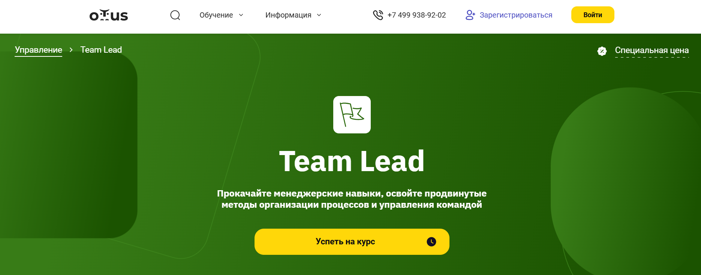- ✅ Официальный сайт: otus.ru
- 💸 Цена обучения: 159 600 ₽ (со скидкой 5%).
- 💳 Рассрочка: доступна от 13 658,50 ₽/мес, можно оплатить за счёт работодателя или разделить оплату 50/50.
- 📚 Формат: дистанционный формат — интерактивные онлайн-вебинары дважды в неделю, практические задания, проектная работа и постоянная обратная связь от преподавателей.
- ⏳ Продолжительность: 5 месяцев.
- 📜 Документ: сертификат о прохождении курса и удостоверение о повышении квалификации.
- 📝 Трудоустройство: размещение резюме в базе партнёров OTUS, карьерные консультации, помощь в подготовке к собеседованиям.
- 🔷 Для кого подходит курс: для начинающих тимлидов, опытных руководителей команд разработки и разработчиков, стремящихся перейти в управленческую роль.
Особенности:
Программа создана для тех, кто хочет развить управленческие навыки и научиться эффективно руководить командой. Курс помогает освоить методы мотивации сотрудников, выстраивать эффективные коммуникации и управлять конфликтами. Студенты научатся применять современные управленческие инструменты и создавать эффективные команды, включая дистанционные коллективы. Преподаватели делятся практическим опытом из реальных IT-проектов. Обучение проходит в удобном дистанционном формате с возможностью совмещать его с работой. Особое внимание уделяется развитию навыков лидерства и построению эффективного взаимодействия внутри проектных команд. Выпускники смогут выстраивать структуру команды, мотивировать сотрудников и повышать эффективность бизнеса.
Чему учатся студенты:
- Эффективному руководству и управлению командой разработчиков
- Планированию и делегированию задач с контролем результатов
- Методам мотивации персонала и поддержанию продуктивности команды
- Выстраиванию коммуникаций и решению конфликтов внутри коллектива
- Применению управленческих инструментов для повышения эффективности бизнеса
- Формированию сильной удалённой команды и организации дистанционной работы
- Оценке компетенций сотрудников и развитию их профессиональных навыков
Преподаватели:
- Александр Пряхин — Tech Unit Lead в Avito, руководитель курса
- Алексей Кирсанов — Руководитель отдела продуктовой разработки в Битрикс24
- Сергей Фегон — Старший технический менеджер TravelLine, бывший CTO в заказной разработке
Преимущества:
- Дистанционный формат с гибким графиком обучения
- Обратная связь от опытных экспертов и действующих тимлидов
- Практические инструменты, основанные на реальных кейсах IT-компаний
- Возможность разработки собственного проекта под руководством наставников
- Доступ к учебным материалам и записям вебинаров без ограничения по времени
- Поддержка карьерного роста и подготовка к собеседованию на управленческие позиции
- Фокус на развитии ключевых навыков лидерства и эффективных коммуникаций
- Помощь в формировании стратегии управления командой и повышения эффективности сотрудников
Отзывы учеников:
Студенты отмечают комплексный подход и высокий уровень практической подготовки. Многие подчёркивают, что обучение помогло систематизировать знания и уверенно перейти в роль руководителя. Отмечают хорошую обратную связь, реальную пользу домашних заданий и поддержку преподавателей. После прохождения курса выпускники успешно трудоустраиваются на позиции тимлидов и руководителей отделов.
Перейти на официальный сайт курса12. Руководитель: команда и бизнес-процессы — Нетология
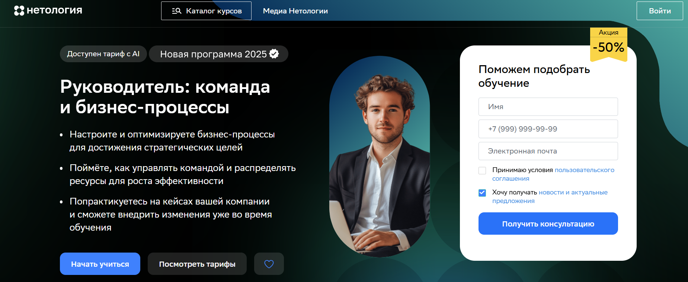- ✅ Официальный сайт: netology.ru
- 💸 Цена обучения: от 65 800 ₽ с учётом скидки до 50%.
- 💳 Рассрочка: до 24 месяцев без переплат, от 2 887 ₽ в месяц.
- 📚 Формат: видеолекции, вебинары, практические задания с проверкой эксперта, деловая игра, тесты и квизы.
- ⏳ Продолжительность: 3,5 месяца (112 часов).
- 📜 Документ: удостоверение о повышении квалификации государственного образца.
- 📝 Трудоустройство: помощь в профессиональном росте, возможность применить полученные навыки в своей компании.
- 🔷 Для кого подходит курс: для руководителей и предпринимателей, желающих выстраивать эффективные процессы, управлять командой и повышать эффективность бизнеса.
Особенности:
Программа направлена на развитие управленческих навыков, формирование эффективных коммуникаций и мотивации сотрудников. Обучение проходит в дистанционном формате с гибким графиком, что позволяет совмещать работу и учёбу. Студенты изучают современные методы управления бизнес-процессами и научатся эффективно руководить командой. Курс помогает освоить инструменты стратегического, тактического и операционного планирования, научиться управлять конфликтами и поддерживать командное взаимодействие. На практических занятиях участники разберут реальные кейсы и создадут систему управления проектом своей компании. Программа обновлена в 2025 году и включает больше практических инструментов и новую деловую игру, развивающую навыки лидерства и мотивацию персонала.
Чему учатся студенты:
- Научиться эффективно управлять проектами и командой
- Выстраивать коммуникацию и мотивировать сотрудников
- Анализировать бизнес-процессы по методу SIPOC и создавать матрицу RACI
- Разрабатывать стратегию развития и повышения эффективности компании
- Научиться выстраивать систему делегирования и контроля задач
- Применять методы мотивации персонала и оценивать эффективность сотрудников
- Формировать команду, способную достигать стратегических целей
Преподаватели:
- Владислав Белоусов — директор по развитию Innovator Cosmetics, более 12 лет в управлении коммерческими подразделениями.
- Олег Морозов — бизнес-консультант, руководил продажами в Wimm Bill Dann, Ehrmann и Gulliver Toys.
- Дмитрий Москвин — директор центра делового обучения «Мастер-Класс», бизнес-тренер и консультант.
- Антонина Лебединская — бизнес-тренер, эксперт по менеджменту и личной эффективности с опытом более 10 лет.
Преимущества:
- Практико-ориентированная программа на основе реальных кейсов компаний
- Современные инструменты управления персоналом и бизнес-процессами
- Дистанционный формат и удобный график обучения
- Поддержка опытных экспертов и проверка заданий с обратной связью
- Развитие ключевых и профессиональных навыков руководства
- Возможность внедрить изученные методы сразу в работу
- Удостоверение о повышении квалификации государственного образца
- Бонус — курс по тайм-менеджменту
Отзывы учеников:
Студенты отмечают качественное обучение, понятную структуру программы и много практических заданий. По отзывам выпускников, курс помогает научиться управлять командой, повышать эффективность сотрудников и выстраивать эффективное взаимодействие. Особенно ценят обратную связь от преподавателей и возможность применять полученные знания на практике уже в процессе обучения.
Перейти на официальный сайт курса13. Комплексное развитие руководителей «Лидер 360°» — Нетология
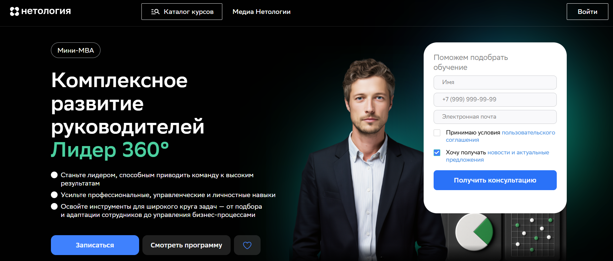- ✅ Официальный сайт: netology.ru
- 💸 Цена обучения: от 76 000 ₽ при оплате одним платежом (со скидкой 40%).
- 💳 Рассрочка: от 3 333 ₽/мес. на 24 месяца без переплат.
- 📚 Формат: студийные видео, лонгриды, кейс-тесты, задания, тренажёры, подкасты, Q&A-сессии для компаний.
- ⏳ Продолжительность: от 5 до 7 месяцев, обучение проходит в дистанционном формате.
- 📜 Документ: сертификат о прохождении курса или удостоверение о повышении квалификации.
- 📝 Трудоустройство: помогает повысить управленческие компетенции и улучшить карьерные перспективы.
- 🔷 Для кого подходит курс: для начинающих менеджеров, тимлидов, руководителей департаментов и собственников бизнеса, которые хотят развить управленческие навыки и эффективно руководить командами.
Особенности:
Программа ориентирована на развитие управленческих и профессиональных навыков в дистанционном формате. Студенты освоят ключевые методы мотивации персонала, научатся эффективно управлять удаленной командой и выстраивать коммуникацию в проектных группах. В основе обучения — реальные кейсы, практические инструменты и тесты с мгновенной обратной связью. Форматы обучения сочетают видеоуроки и практические задания, что помогает развивать навыки лидерства и выстраивать эффективные процессы. Каждый участник получает возможность научиться управлять конфликтами, мотивировать сотрудников и создавать эффективные системы взаимодействия. По окончании курса слушатели смогут применять современные инструменты управления и повышать эффективность бизнеса.
Чему учатся студенты:
- Эффективному руководству и построению команды
- Методам мотивации и развитию компетенций сотрудников
- Управлению конфликтами и коммуникациям в дистанционных командах
- Постановке задач и контролю выполнения проектов
- Использованию инструментов OKR, CJM, Go to Market Strategy и Jobs-To-Be-Done
- Развитию навыков стратегического планирования и системного мышления
Преподаватели:
- Сергей Дунаев — генеральный директор «Северсталь-инфоком»
- Наталья Цветкова — профессор, руководитель Психологической службы МПГУ
- Анна Львова — директор по персоналу «Севергрупп» и директор по правовым вопросам TalentTech
Преимущества:
- Дистанционный формат, доступный из любой точки мира
- Гибкий график обучения и удобная платформа с мобильным приложением
- Реальные кейсы и практические задания от экспертов рынка
- Мгновенная проверка знаний и персональная обратная связь
- Поддержка координатора и персонализированные Q&A-сессии
- Возможность корпоративного обучения с адаптацией под бизнес-задачи компании
- Налоговый вычет 13% и гарантия возврата средств при отказе от обучения
- Сертификат о повышении квалификации после успешного завершения программы
Отзывы учеников:
Студенты отмечают практическую направленность курса, качественные материалы и удобный дистанционный формат. Многие оценили пользу реальных кейсов, обратную связь от преподавателей и возможность сразу применять полученные знания в работе. Отмечают, что обучение помогает улучшить управленческие навыки, повысить эффективность команды и развить уверенность в роли руководителя.
Перейти на официальный сайт курса14. Управление командой — Онлайн-школа Бруноям
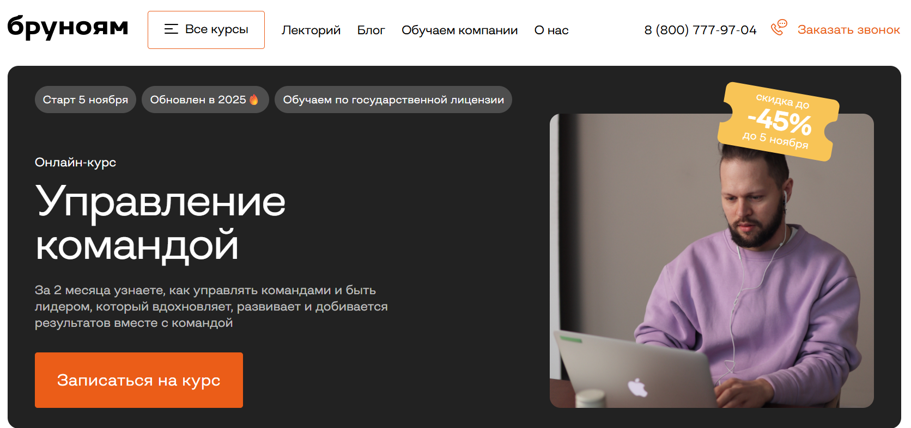- ✅ Официальный сайт: brunoyam.com
- 💸 Цена обучения: от 49 900 ₽.
- 💳 Рассрочка: от 4 158 ₽/мес до 12 месяцев без переплат через Сбер или Т-банк.
- 📚 Формат: дистанционный формат обучения — видеоуроки, практические задания, проекты, тесты, общение с наставником и карьерным консультантом.
- ⏳ Продолжительность: 2 месяца.
- 📜 Документ: сертификат школы и удостоверение о повышении квалификации (в зависимости от тарифа).
- 📝 Трудоустройство: помощь карьерного центра — консультации, чат с вакансиями, поддержка в составлении резюме и портфолио.
- 🔷 Для кого подходит курс: для руководителей, менеджеров проектов и специалистов, стремящихся развить управленческие навыки и улучшить мотивацию сотрудников.
Особенности:
Программа обновлена в 2025 году и направлена на развитие управленческих навыков, необходимых для эффективного руководства командами в современных компаниях. Студенты изучают методы мотивации персонала, учатся выстраивать эффективные коммуникации и управлять конфликтами. Курс помогает освоить инструменты лидерства и улучшить навыки стратегического планирования. Благодаря дистанционному формату обучения участники могут совмещать процесс обучения с работой. Наставники поддерживают студентов на каждом этапе, проверяют практические задания и дают развернутую обратную связь. После окончания курса слушатели смогут научиться эффективно руководить командами, выстраивать коммуникацию и мотивировать сотрудников в условиях постоянных изменений.
Чему учатся студенты:
- Осваивают инструменты эффективного лидерства и мотивации персонала
- Учится выстраивать структуру команды и управлять конфликтами
- Развивают навыки управления проектами и стратегического планирования
- Получают практические знания по делегированию и контролю задач
- Научаются поддерживать эффективную работу удаленных и гибридных команд
- Формируют компетенции успешного руководителя и применяют методы мотивации сотрудников
Преподаватели:
- Александр Сухорученко — руководитель проектов, эксперт в управлении командами, автор практических программ по лидерству и командной работе.
Преимущества:
- Дистанционный формат — возможность обучаться из любой точки мира
- 85% курса занимает практика и работа над реальными проектами
- Персональное сопровождение наставников и быстрая обратная связь
- Гибкий график обучения, подходящий для занятых специалистов
- Программа адаптируется под цели и задачи слушателя
- Помощь в трудоустройстве и составлении карьерного плана
- Современные методы обучения и актуальные модули курса
Отзывы учеников:
Студенты отмечают высокий профессионализм преподавателей и практическую направленность занятий. Особо выделяют доступность материала, качественную обратную связь и поддержку наставников. По отзывам выпускников, курс помогает развить управленческие навыки, научиться выстраивать эффективные коммуникации и успешно применять полученные знания в работе с командами.
Перейти на официальный сайт курса15. Искусство управлять собой и командой — Русская Школа Управления
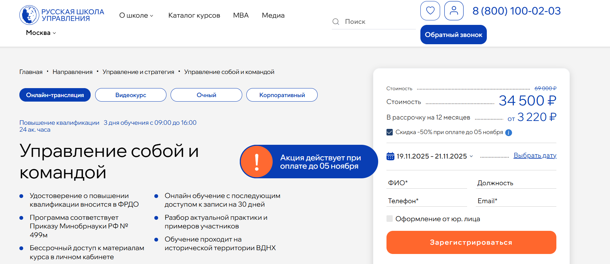- ✅ Официальный сайт: uprav.ru
- 💸 Цена обучения: от 34 500 ₽ (в зависимости от формата обучения).
- 💳 Рассрочка: доступна от 3 220 ₽/мес до 12 месяцев без переплат.
- 📚 Формат: онлайн-трансляция, видеокурс или очное обучение; включает лекции, практические задания, разбор кейсов, обратную связь от преподавателей.
- ⏳ Продолжительность: 24 академических часа (3 дня обучения с 09:00 до 16:00).
- 📜 Документ: удостоверение о повышении квалификации, внесённое в ФРДО.
- 📝 Трудоустройство: курс способствует карьерному росту и развитию управленческих компетенций.
- 🔷 Для кого подходит курс: для руководителей, менеджеров, HR-специалистов и всех, кто хочет улучшить управленческие и коммуникативные навыки.
Особенности:
Программа создана для тех, кто стремится научиться эффективно управлять командой, развить навыки лидерства и выстраивать эффективные коммуникации. Обучение проходит в дистанционном формате или очно на ВДНХ, а после завершения участники получают бессрочный доступ к материалам. Студенты освоят инструменты фасилитации, модерации и коучинга, позволяющие улучшить взаимодействие в коллективе. Программа ориентирована на развитие ключевых управленческих навыков и повышение эффективности сотрудников. Участники учатся контролировать задачи, управлять конфликтами и поддерживать продуктивность команды даже при дистанционной работе. Благодаря гибкому графику и поддержке опытных преподавателей обучение удобно совмещать с работой.
Чему учатся студенты:
- Оптимизировать командную работу через фасилитацию и модерацию
- Внедрять мотивационные стратегии для разных типов сотрудников
- Проводить продуктивные совещания и формировать эффективную обратную связь
- Использовать коучинговые подходы для управления стрессом и эмоциями
- Предотвращать профессиональное выгорание и повышать личную эффективность
- Применять методы мотивации для развития сотрудников и укрепления командного взаимодействия
Преподаватели:
- Котляренко Максим Павлович — управляющий партнёр, генеральный директор «How to brain. Coaching&Consulting», эксперт в стратегическом управлении.
- Михайлов Дмитрий Юрьевич — преподаватель MBA РШУ, специалист по лидерству, развитию управленческих навыков и переговорам.
- Цаплина Ольга Сергеевна — эксперт по развитию бизнес-мышления, преподаватель MBA, карьерный консультант.
- Карпенко Анастасия Степановна — доктор психологических наук, профессор, заслуженный деятель науки РФ, бизнес-консультант.
Преимущества:
- 70% практики и 30% теории, основанные на реальных кейсах и опыте преподавателей
- Бессрочный доступ к учебным материалам и записям занятий
- Гибкие форматы обучения: очно, онлайн или в виде видеокурса
- Сертификат государственного образца с внесением в ФРДО
- Применение современных методов управления и мотивации персонала
- Поддержка преподавателей с опытом руководства крупными проектами
- Развитие практических навыков эффективного руководства и коммуникации
Отзывы учеников:
Слушатели отмечают высокий уровень преподавания, профессионализм лекторов и удобный формат обучения. По отзывам, участники получают не только теорию, но и практические инструменты, которые помогают улучшить эффективность команд и повысить результаты бизнеса. Особенно хвалят вовлечённость преподавателей и возможность применять полученные знания сразу после курса.
Перейти на официальный сайт курса16. MBA Эксперт: Управление компанией — Русская Школа Управления
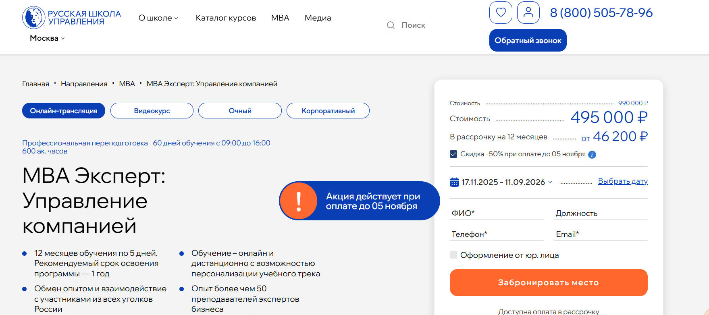- ✅ Официальный сайт: uprav.ru
- 💸 Цена обучения: 990 000 ₽ (скидка 50% при оплате по акции — 495 000 ₽)
- 💳 Рассрочка: до 12 месяцев, от 46 200 ₽ в месяц
- 📚 Формат: онлайн-трансляции, видеокурс, очные занятия, дистанционный формат с доступом к платформе, тестами и практическими заданиями
- ⏳ Продолжительность: 12 месяцев обучения по 5 дней, рекомендованный срок — 1 год
- 📜 Документ: диплом о профессиональной переподготовке установленного государственного образца, данные вносятся в ФРДО
- 📝 Трудоустройство: повышение квалификации, карьерный рост, внедрение управленческих решений в действующем бизнесе
- 🔷 Для кого подходит курс: для собственников бизнеса, топ-менеджеров, руководителей отделов и специалистов, стремящихся развить управленческие навыки и эффективно руководить командами
Особенности:
Программа направлена на развитие стратегического мышления и ключевых управленческих компетенций. Обучение проходит в дистанционном формате, что позволяет совмещать процесс обучения с профессиональной деятельностью. Участники изучают современные подходы к мотивации персонала, выстраивают эффективные коммуникации и научаются управлять конфликтами. Курс развивает навыки лидерства и помогает создавать эффективную командную работу даже в удаленной среде. Студенты осваивают практические инструменты для анализа бизнес-процессов и принятия управленческих решений. После окончания обучения выпускники получают диплом государственного образца, подтверждающий уровень профессиональных навыков.
Чему учатся студенты:
- Эффективно управлять бизнес-процессами и командой
- Выстраивать коммуникацию и мотивировать сотрудников
- Принимать управленческие решения в сложных ситуациях
- Осваивать инструменты стратегического планирования и оценки эффективности
- Развивать навыки лидерства и формировать сильные коллективы
- Создавать и реализовывать инновационные проекты и стартапы
- Научиться эффективно взаимодействовать в дистанционных командах
Преподаватели:
- Трушкин Сергей Юрьевич — преподаватель MBA РШУ, эксперт по цифровой трансформации, инженер-системотехник
- Бажанова Юлия Владимировна — руководитель IT-проектов, ментор CDTO, эксперт по цифровым стратегиям
- Голещихин Николай Николаевич — эксперт по антикризисному управлению и стратегическому развитию компаний
- Ефремова Елизавета Валериевна — организационный психолог, эксперт по развитию управленческих команд
Преимущества:
- 70% практики и 30% теории, основанной на реальных кейсах
- Дистанционное обучение с гибким графиком и возможностью индивидуальных консультаций
- Опыт преподавателей-практиков из ведущих российских компаний
- База знаний и чек-листы в подарок с вечным доступом
- Онлайн-формат с обратной связью и поддержкой наставников
- Повышение эффективности сотрудников и управленческих процессов
- Профессиональный рост и карьерные возможности после окончания обучения
Отзывы учеников:
Студенты Русской Школы Управления отмечают высокий уровень преподавания, понятную структуру курса и большое количество практических заданий. Многие подчеркивают, что обучение помогает систематизировать знания, улучшить управленческие навыки и выстроить эффективное взаимодействие в командах. Отдельно хвалят хорошую обратную связь, гибкий формат и возможность применять полученные знания в реальных проектах.
Перейти на официальный сайт курса17. Школа профессионального руководителя — Русская Школа Управления
- ✅ Официальный сайт: uprav.ru
- 💸 Цена обучения: от 115 000 ₽ до 230 000 ₽ в зависимости от формата обучения.
- 💳 Рассрочка: доступна от 10 733 ₽/мес до 12 месяцев без переплат.
- 📚 Формат: очное обучение, онлайн-трансляция или видеокурс; дистанционный формат включает лекции, практические задания, обратную связь и записи занятий.
- ⏳ Продолжительность: 3 месяца (250 академических часов, 15 дней обучения по 5 дней в месяц).
- 📜 Документ: диплом о профессиональной переподготовке, внесённый в ФРДО.
- 📝 Трудоустройство: способствует карьерному росту и продвижению на руководящие должности.
- 🔷 Для кого подходит курс: для действующих и начинающих руководителей, специалистов, желающих развить управленческие навыки и повысить эффективность персонала.
Особенности:
Программа сочетает теорию и практику управления, делая упор на развитие ключевых управленческих компетенций. Студенты изучают современные методы лидерства, мотивации сотрудников и эффективных коммуникаций. Обучение проходит в дистанционном формате с поддержкой преподавателей в реальном времени. Участники осваивают инструменты стратегического планирования, управления изменениями и построения команд. Курс помогает выстраивать эффективные коммуникации, мотивировать сотрудников и управлять коллективом в различных бизнес-условиях. После окончания обучения слушатели получают бессрочный доступ к материалам и базе знаний с шаблонами и чек-листами. Такой подход формирует у выпускников устойчивые навыки лидерства и успешного руководства.
Чему учатся студенты:
- Эффективно управлять командами и проектами для достижения стратегических целей компании
- Разрабатывать и внедрять методы мотивации персонала и вовлечённости сотрудников
- Осваивать ключевые инструменты стратегического планирования и анализа бизнес-процессов
- Научиться управлять конфликтами и повышать эффективность взаимодействия в коллективе
- Формировать структуру удалённой команды и контролировать результаты её работы
- Развивать навыки лидерства, стратегического мышления и эффективного управления изменениями
Преподаватели:
- Трушкин Сергей Юрьевич — преподаватель МВА РШУ, эксперт в цифровой трансформации и организационном дизайне.
- Бажанова Юлия Владимировна — руководитель IT-проектов, CDTO, ментор руководителей IT-компаний.
- Голещихин Николай Николаевич — эксперт в области антикризисного управления и стратегического развития.
- Ефремова Елизавета Валериевна — преподаватель МВА, организационный психолог, специалист по развитию управленческих команд.
Преимущества:
- Курс основан на реальных кейсах и примерах из практики опытных руководителей
- Возможность обучения в гибком формате: очно, онлайн или по видеозаписям
- Бессрочный доступ к материалам и готовым управленческим инструментам
- Развитие навыков лидерства, эффективного руководства и стратегического мышления
- Поддержка преподавателей и обратная связь в процессе обучения
- Диплом государственного образца, внесённый в Федеральный реестр документов об образовании
- Индивидуальный график для слушателей с плотным рабочим расписанием
- Возможность применять полученные знания в работе уже во время обучения
Отзывы учеников:
Студенты Русской Школы Управления отмечают высокий уровень преподавания, качественные учебные материалы и удобный дистанционный формат. Среди преимуществ чаще всего выделяют практическую направленность, профессионализм преподавателей и возможность сразу применять полученные знания на рабочем месте. Многие слушатели подчеркивают рост управленческих навыков и повышение эффективности команд после прохождения программы.
Перейти на официальный сайт курса18. Личная эффективность и управленческие навыки — City Business School
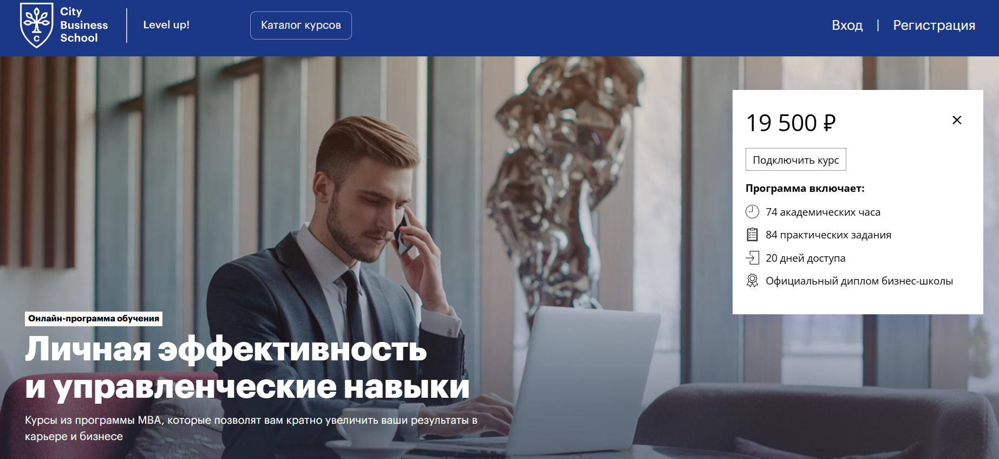- ✅ Официальный сайт: online.e-mba.ru
- 💸 Цена обучения: 19 500 ₽.
- 💳 Рассрочка: предоставляется по индивидуальному запросу от 1 625 ₽/мес.
- 📚 Формат: дистанционный формат, видеолекции, практические задания, тесты и итоговая аттестация.
- ⏳ Продолжительность: 20 дней (74 академических часа).
- 📜 Документ: официальный диплом бизнес-школы City Business School в электронном виде.
- 📝 Трудоустройство: выпускники получают поддержку при поступлении на MBA и MINI-MBA программы с перезачетом дисциплин и скидками.
- 🔷 Для кого подходит курс: для менеджеров, руководителей, специалистов, стремящихся повысить эффективность работы и развить управленческие навыки.
Особенности:
Программа обучения создана на основе практического опыта опытных экспертов и направлена на развитие профессиональных и управленческих навыков. Студенты осваивают современные методы мотивации сотрудников, выстраивают эффективные коммуникации и учатся создавать командное взаимодействие. Дистанционный формат позволяет проходить курс в удобное время, совмещая обучение с работой. Каждый участник получает доступ к обновлениям программы, практическим материалам и инструментам повышения эффективности бизнеса. После успешного завершения курса можно продолжить обучение в формате MBA со специальными условиями. Программа помогает развить лидерские качества, освоить инструменты стратегического планирования и научиться эффективно управлять командой в проектных и дистанционных форматах.
Чему учатся студенты:
- Эффективно управлять временем и расставлять приоритеты
- Научиться делегировать задачи и контролировать результаты
- Развивать навыки лидерства и управления коллективом
- Выстраивать эффективные коммуникации и мотивировать сотрудников
- Управлять конфликтами и принимать взвешенные решения
- Создавать личный бренд и уверенно выступать на публике
- Формировать стратегию развития команды и компании
Преподаватели:
- Сергей Калинин — бизнес-тренер, автор книги по тайм-менеджменту, психолог-консультант.
- Павел Сивожелезов — эксперт по управлению подчиненными, автор книги «Сложные переговоры с подчиненными».
- Андрей Кениг — генеральный директор Московского Центра НЛП, консультант по психологии продаж.
- Ольга Юдина — кандидат филологических наук, коуч, эксперт по ораторскому мастерству.
- Михаил Молоканов — президент Школы бизнес-тренеров, эксперт международного уровня по лидерству.
- Виктория Шиманская — специалист по эмоциональному интеллекту, руководитель проекта «Монсики».
- Мария Азаренок — бизнес-блогер и тренер по личному брендингу.
- Сергей Дерябин — эксперт по лидерству и стресс-менеджменту.
- Ирина Несивкина — психолог, натуропат, специалист по управлению эмоциональным состоянием.
- Елена Луценко — советник министра предпринимательства Бельгии, стратегический консультант.
Преимущества:
- Современные форматы обучения и дистанционный доступ к материалам
- Бессрочный доступ к обновлениям программы
- Поддержка выпускников при поступлении на MBA
- Преподаватели — опытные специалисты с реальной управленческой практикой
- Развитие ключевых навыков управления и лидерства
- Возможность применить полученные знания на практике уже во время курса
- Официальный диплом, подтверждающий компетенции
- Высокий рейтинг и положительные отзывы студентов
Отзывы учеников:
Студенты отмечают практическую направленность курса, доступное изложение материала и профессионализм преподавателей. Большинство отзывов подчеркивает, что обучение помогает систематизировать управленческие знания, научиться эффективно руководить командой и повышать эффективность бизнеса. Особенно выделяют качественные примеры, обратную связь кураторов и удобный дистанционный формат обучения.
Перейти на официальный сайт курса19. Soft Skills for Leads — образовательная платформа Slurm
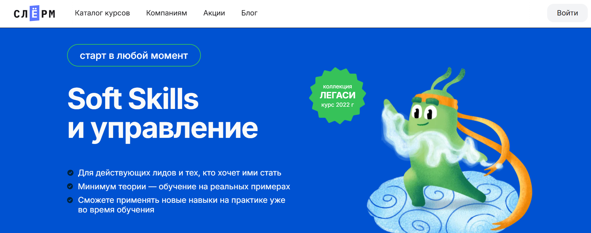
- ✅ Официальный сайт: slurm.io
- 💸 Цена: уточняется на сайте после регистрации.
- 💳 Рассрочка: предоставляется без переплат.
- 📚 Формат: дистанционный формат обучения — видеолекции, практические задания, тесты и работа с кейсами.
- ⏳ Продолжительность: 2 месяца.
- 📜 Документ: сертификат о прохождении обучения.
- 📝 Трудоустройство: помогает повысить эффективность управления и улучшить профессиональные навыки руководителя.
- 🔷 Для кого подходит курс: тимлидам, техлидам, руководителям отделов, менеджерам проектов, инженерам эксплуатации и специалистам, которые управляют командами.
Особенности:
Курс направлен на развитие управленческих навыков, навыков лидерства и эффективных коммуникаций для руководителей IT-команд. Программа помогает научиться эффективно управлять коллективом, мотивировать сотрудников и управлять конфликтами. Участники освоят инструменты повышения эффективности сотрудников и научатся создавать эффективные структуры команд. Обучение проходит в дистанционном формате, что удобно для занятых специалистов. По итогам курса слушатели улучшат навыки взаимодействия, смогут эффективно руководить и выстраивать коммуникацию в распределенных командах. Программа основана на опыте опытных руководителей и практических инструментов управления.
Чему учатся студенты:
- Научиться управлять проектами и людьми в дистанционных командах
- Развивать сотрудников и поддерживать эффективную командную атмосферу
- Освоить методы и инструменты мотивации персонала
- Выстраивать эффективные процессы коммуникации
- Развивать ключевые навыки руководства и эффективного взаимодействия
- Научиться выстраивать стратегию управления и повышать эффективность бизнеса
Преподаватели:
- Алексей Малышев — эксперт по управлению проектными командами, SRE-консультант
- Ольга Панфилова — коуч по лидерству, специалист по развитию управленческих навыков
- Дмитрий Орлов — технический директор, автор тренингов по эффективному руководству
Преимущества:
- Дистанционный формат обучения с удобным графиком
- Фокус на практических навыках и реальных кейсах
- Преподаватели — опытные руководители и практикующие эксперты
- Помогает повысить эффективность сотрудников и улучшить навыки лидерства
- Освойте ключевые управленческие компетенции без отрыва от работы
- Курс подходит для корпоративного обучения и развития команд
- После окончания обучения участники смогут эффективно руководить и мотивировать сотрудников
Отзывы учеников:
Студенты отмечают, что курс помогает развивать управленческие навыки и повышать эффективность команд. Многие подчеркивают практическую пользу — задания позволяют применять знания в реальных рабочих ситуациях. Отмечают понятную подачу материала, высокий уровень преподавателей и полезные практические инструменты для улучшения работы с коллективом.
Перейти на официальный сайт курса20. Управление командой тестировщиков — Академия информационных систем
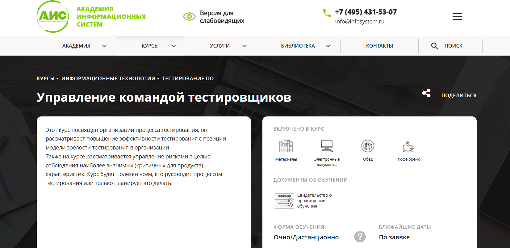- ✅ Официальный сайт: infosystems.ru
- 💸 Цена обучения: 25 000 ₽
- 💳 Рассрочка: не предусмотрена, оплата производится по заявке.
- 📚 Формат: очное и дистанционное обучение, включает материалы, электронные документы, обед и кофе-брейк.
- ⏳ Продолжительность: 2 дня (16 академических часов).
- 📜 Документ: свидетельство о прохождении обучения.
- 📝 Трудоустройство: курс повышает квалификацию и управленческие компетенции, востребованные в IT-компаниях.
- 🔷 Для кого подходит курс: для начальников и ведущих специалистов отделов тестирования, а также опытных специалистов, стремящихся к профессиональному росту и развитию управленческих навыков.
Особенности:
Программа направлена на развитие профессиональных и управленческих навыков в сфере тестирования. Участники научатся эффективно управлять командой, выстраивать коммуникацию и мотивировать сотрудников на достижение ключевых целей. Курс поможет освоить инструменты управления рисками и изучить стили лидерства для создания эффективной команды. Программа построена на практических занятиях, что позволяет закрепить полученные знания. Слушатели смогут научиться выстраивать эффективные рабочие процессы и оценивать эффективность тестирования в проектных командах. Благодаря дистанционному формату обучения студенты смогут совмещать обучение с работой, сохраняя личную эффективность и продуктивность коллектива.
Чему учатся студенты:
- Организовывать процесс тестирования с учетом модели зрелости в компании
- Управлять рисками и эффективно руководить командой тестировщиков
- Формировать команду и выстраивать эффективное взаимодействие между членами коллектива
- Осваивать методы мотивации сотрудников и управления конфликтами
- Развивать навыки лидерства и принимать управленческие решения в сложных ситуациях
Преподаватели:
- Боронин Сергей Сергеевич — преподаватель-эксперт Академии информационных систем, автор 14 курсов по системному администрированию, информационной безопасности и программированию под Linux. Опыт работы CIO в крупной российской компании, антикризисный IT-директор, преподаватель УЦ «Специалист» при МГТУ им. Баумана.
Преимущества:
- Практическая направленность программы с акцентом на реальные кейсы
- Возможность обучения в дистанционном формате с гибким графиком
- Преподавание опытными экспертами с управленческим опытом
- Развитие ключевых навыков руководства и эффективных коммуникаций
- Помощь в повышении профессиональной квалификации
- Фокус на управлении эффективностью сотрудников и командным взаимодействием
Отзывы учеников:
В отзывах слушатели отмечают качественные учебные материалы и высокий уровень преподавателей. Студенты подчеркивают, что курс помогает развить управленческие навыки, научиться эффективно руководить командой и выстраивать рабочие процессы. Многие положительно оценивают удобный формат обучения и практическую пользу занятий для карьерного роста.
Перейти на официальный сайт курса21. Тимлид (Team leader) — Центр компьютерного обучения «Специалист» при МГТУ им. Баумана
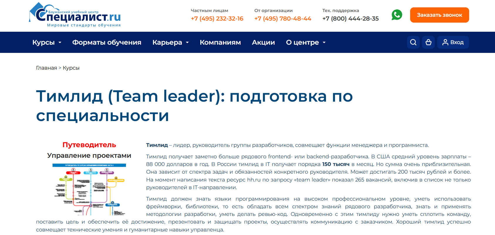- ✅ Официальный сайт: specialist.ru
- 💸 Цена: от 241 990 ₽ до 314 690 ₽ в зависимости от программы и формата обучения.
- 💳 Рассрочка: доступна при записи через сайт или по телефону центра от 20 165 ₽/мес.
- 📚 Формат: дистанционный формат, практические занятия, видеолекции, тесты и работа над реальными проектами.
- ⏳ Продолжительность: от 4 до 8 месяцев (356–548 ак. часов).
- 📜 Документ: диплом о профессиональной переподготовке.
- 📝 Трудоустройство: выпускники получают востребованные управленческие позиции в IT-компаниях и отделах разработки.
- 🔷 Для кого подходит курс: для разработчиков, менеджеров проектов и специалистов, желающих развить навыки руководства и эффективно управлять командой.
Особенности:
Программа направлена на развитие управленческих навыков и навыков лидерства, необходимых для руководства проектными командами. Студенты осваивают методы мотивации сотрудников, учатся эффективно управлять коллективом и выстраивать эффективные коммуникации с заказчиком и участниками проекта. Обучение проходит в дистанционном формате с возможностью совмещать учебу и работу. Курсы включают практические задания и анализ реальных кейсов, что помогает улучшить навыки руководства и повысить эффективность сотрудников. Выпускники смогут научиться управлять конфликтами, поддерживать эффективную командную работу и создавать сильные проектные коллективы. Программа формирует ключевые навыки успешного руководителя, способного вдохновлять команду и повышать эффективность бизнеса.
Чему учатся студенты:
- Научиться эффективно руководить командой и управлять проектом
- Освоить методы мотивации персонала и вовлеченности сотрудников
- Развить навыки лидерства и управления конфликтами
- Выстраивать коммуникацию и создавать эффективное взаимодействие
- Освоить практические инструменты контроля задач и оценки эффективности
- Формировать команду и поддерживать продуктивность при дистанционной работе
Преподаватели:
- Динцис Данил Юрьевич — преподаватель курсов DevOps и ITIL 4.0, эксперт по управлению командами.
- Шуйков Сергей Юрьевич — разработчик, преподаватель курсов C# и ASP.NET Core MVC, специалист с практическим опытом.
- Чак Максим Юрьевич — преподаватель курса «Основы управления ИТ-услугами по ITIL 4.0», эксперт по IT-сервисам.
- Тимина Татьяна Анатольевна — преподаватель курса «Анализ и управление рисками», специалист в области проектного менеджмента.
Преимущества:
- Обучение проходит онлайн с гибким графиком
- Опытные преподаватели с реальной практикой управления командами
- Практическая направленность и реальные кейсы из IT-проектов
- Развитие ключевых управленческих и профессиональных навыков
- Диплом установленного образца после окончания курса
- Применение современных инструментов и методик управления
- Повышение квалификации и профессиональный рост
- Формирование эффективных управленческих компетенций
Отзывы учеников:
Студенты Центра «Специалист» отмечают высокий уровень преподавания и доступную подачу материала. Отдельно подчеркивают, что обучение помогает развить управленческие навыки, повысить личную эффективность и научиться выстраивать коммуникацию в проектных командах. Выпускники ценят практические инструменты и гибкий формат, позволяющий совмещать обучение с работой.
Перейти на официальный сайт курсаБесплатные курсы по обучению на Руководителя командой (Team leader)
Программист или менеджер? Всё о должности тимлида за 3 дня, бесплатно – Skillbox
✅ Официальный сайт: intensive.skillbox.ruОписание и особенности:
- За три дня участники узнают, кто такой тимлид, какие управленческие навыки ему нужны и как выстраивать эффективные коммуникации в команде.
- Программа помогает развить навыки лидерства и научиться эффективно руководить проектной и удалённой командой.
- Обучение проходит в дистанционном формате с доступом к записям занятий и практическим инструментам для работы с людьми.
- Студенты освоят ключевые навыки — от мотивации персонала до методов управления конфликтами и повышения эффективности сотрудников.
- Занятия ведёт опытный руководитель с 19-летним стажем в IT, делящийся примерами из реальных проектов.
- Слушатели научатся управлять процессами разработки, выстраивать коммуникацию с заказчиками и улучшить навыки организации команды.
- После окончания обучения участники смогут эффективно управлять коллективом и развивать сотрудников, повышая эффективность бизнеса.
- Курс включает практические задания, советы по карьерному росту и разбор типичных ситуаций из работы тимлида.
- Доступ к интенсиву остаётся после завершения — можно повторно пройти материалы в любое удобное время.
Как построить эффективную команду всего за 10 недель – Techteams.ru
✅ Официальный сайт: techteams.ruОписание и особенности:
- Программа помогает руководителям освоить управленческие навыки и научиться эффективно руководить коллективом в дистанционном формате.
- За 10 недель участники по шагам создают эффективные команды и выстраивают коммуникацию между сотрудниками.
- Курс включает практические рекомендации, реальные примеры и инструменты для повышения эффективности сотрудников.
- Слушатели изучат методы мотивации персонала, управления конфликтами и формирования командного взаимодействия.
- Материалы направлены на развитие ключевых и профессиональных навыков, которые помогут улучшить эффективность бизнеса.
- Форматы обучения удобные для дистанционной работы и включают практические задания для закрепления навыков.
- Участники смогут научиться управлять удаленной командой и системно развивать сотрудников.
- После прохождения курса руководители получат готовую дорожную карту по повышению эффективности команды.
- Руководство создано опытными экспертами и помогает применять полученные знания на практике в проектных командах.
Кто такой руководитель командой (Team Lead)?
Team Lead — это ключевая фигура в любой компании, отвечающая за координацию работы команды и достижение поставленных целей. Он совмещает управленческие и технические функции, выступая связующим звеном между руководством и сотрудниками. Основная задача тимлида — организовать эффективное взаимодействие внутри коллектива, повысить продуктивность и создать благоприятную рабочую атмосферу.
Что делают Team Leader’ы и чем они занимаются?
Работа руководителя командой многогранна. Он не только следит за выполнением задач, но и помогает развивать профессиональные навыки подчинённых. Тимлид должен понимать как бизнес-процессы, так и технические детали проектов.
- Планирование работы команды: постановка задач, определение сроков и контроль выполнения.
- Координация взаимодействия: организация коммуникации между отделами и участниками проекта.
- Мотивация сотрудников: поддержание высокой вовлеченности и командного духа.
- Решение конфликтов: оперативное урегулирование споров и предотвращение недопонимания.
- Отчетность перед руководством: анализ прогресса и результатов работы команды.
- Обучение и развитие персонала: наставничество и помощь в профессиональном росте.
Что должен знать и уметь Team Lead?
Чтобы стать успешным руководителем командой, необходимо сочетать управленческие, коммуникативные и технические компетенции. Тимлид — это лидер, стратег и наставник в одном лице.
- Лидерские качества: умение вдохновлять и направлять коллектив.
- Навыки коммуникации: грамотное ведение переговоров и построение доверительных отношений.
- Организаторские способности: планирование, делегирование и контроль задач.
- Знание методологий управления проектами: Agile, Scrum, Kanban, Waterfall.
- Понимание технической стороны проектов: особенно важно в IT, инженерии и производстве.
- Эмоциональный интеллект: способность понимать эмоции коллег и корректно реагировать на них.
Востребованность и зарплаты Тимлидов в России
Профессия Team Lead остаётся одной из самых востребованных на рынке труда. Компании активно ищут специалистов, способных эффективно управлять командами и внедрять современные подходы к управлению проектами.
- IT-сфера: от 180 000 до 400 000 рублей в месяц.
- Маркетинг и digital: от 120 000 до 250 000 рублей.
- Производственные компании: от 100 000 до 220 000 рублей.
- Финансовый сектор: от 150 000 рублей и выше.
Размер зарплаты зависит от региона, опыта работы, размера компании и сферы деятельности. Наиболее высокие доходы фиксируются в Москве, Санкт-Петербурге и крупных IT-хабах России.
Как стать руководителем командой и где учиться?
Путь к должности Team Lead начинается с накопления опыта в своей профессиональной области. Руководителем становятся, как правило, специалисты среднего или старшего уровня (Middle, Senior), которые проявляют лидерские качества и инициативу.
- 1. Получите профильное образование: техническое, управленческое или экономическое направление.
- 2. Работайте в команде: изучите все аспекты командной работы изнутри.
- 3. Освойте навыки управления проектами: курсы по Agile, Scrum, Project Management.
- 4. Развивайте soft skills: лидерство, коммуникация, управление стрессом и временем.
- 5. Пройдите профессиональную сертификацию: PMP, PRINCE2, PMI-ACP или внутренние корпоративные программы.
Перспективы профессии Тимлида и карьерный рост
Team Leader может развиваться в нескольких направлениях: перейти в проектный менеджмент, стать руководителем отдела (Head of Department) или директором по развитию (CTO, COO). Также многие тимлиды открывают собственные бизнесы или становятся консультантами по управлению командами.
- Project Manager (PM): управление крупными проектами и стратегическими задачами.
- Head of Team / Department: руководство несколькими командами.
- CTO или COO: управление всей технической или операционной частью компании.
Что такое управление командой и почему обучение этому важно?
Управление командой — это система эффективных коммуникаций, мотивации персонала и развития управленческих навыков. Современные форматы обучения позволяют освоить практические инструменты и методы, которые помогают эффективно управлять сотрудниками, выстраивать взаимодействие и повышать эффективность бизнеса. Без навыков эффективного руководства сложно достигать стратегических целей компании.
Какие ключевые навыки развивает обучение управлению командой?
Курс по управлению командой развивает навыки лидерства, мотивации сотрудников, управления конфликтами и эффективного взаимодействия. Участники освоят инструменты стратегического планирования, научатся эффективно выстраивать коммуникацию и управлять удалёнными сотрудниками. Также студенты разовьют навыки анализа, делегирования и оценки эффективности.
Кому подойдёт обучение на Тимлида?
Программа рассчитана на руководителей отделов, менеджеров проектов, владельцев бизнеса и специалистов, стремящихся стать успешными лидерами. Также курс подходит тем, кто хочет улучшить навыки руководства, повысить мотивацию персонала и научиться эффективно руководить проектными и дистанционными командами.
Чему научатся участники курса по управлению командой?
Студенты научатся управлять людьми и процессами, создавать эффективные команды, мотивировать сотрудников и поддерживать эффективное взаимодействие. Они освоят ключевые навыки постановки задач, управления конфликтами и развития компетенций сотрудников. По итогу обучения участники смогут эффективно руководить даже в сложных ситуациях.
Какие форматы обучения на Тимлида доступны?
Современные форматы обучения включают онлайн-лекции, живые вебинары, практические занятия и реальные кейсы. Обучение проходит в дистанционном формате, что позволяет совмещать учебу с работой. Благодаря удобному графику обучения, студенты могут осваивать материал в любое время и улучшать навыки без отрыва от основной деятельности.
Чем отличается дистанционный формат обучения управлению командой от очной?
Дистанционный формат позволяет обучаться из любой точки мира, получать знания от опытных экспертов и использовать практические инструменты управления удалёнными командами. Участники узнают, как выстраивать эффективные коммуникации в распределённых коллективах и поддерживать вовлечённость сотрудников на высоком уровне.
Как обучение помогает развить навыки лидерства?
Программы обучения развивают навыки лидерства, необходимые для эффективного руководства. Студенты научатся вдохновлять команду, выстраивать доверие, принимать решения и достигать общих целей. Также курс поможет развить уверенность, ответственность и умение мотивировать сотрудников.
Какие инструменты и методы изучаются на курсе для Тимлида?
Участники освоят методы управления проектами, инструменты мотивации персонала, способы управления конфликтами и эффективного взаимодействия внутри коллектива. Также рассматриваются современные методики коммуникаций, делегирования и оценки эффективности сотрудников.
Можно ли научиться эффективно управлять удалённой командой?
Да, программа включает блок по управлению удалённой командой и дистанционных команд. Вы научитесь выстраивать коммуникацию в онлайн-среде, контролировать задачи и повышать производительность команды с помощью цифровых инструментов. Эти знания особенно важны в эпоху гибридной работы.
Как проходит обучение по управлению командой и какие этапы включает?
Процесс обучения строится поэтапно: теория, практика, реальные проекты и итоговая аттестация. Занятия проходят онлайн, с практическими заданиями и обратной связью от опытных наставников. По окончании обучения участники получают сертификат, подтверждающий их управленческие компетенции.
Как обучение на Тимлида помогает повысить эффективность сотрудников?
Курс помогает руководителям повысить эффективность сотрудников за счёт правильной мотивации, эффективных коммуникаций и чёткой постановки задач. Руководители освоят инструменты анализа и контроля, что позволит оптимизировать рабочие процессы и повысить производительность команды.
Какие результаты получают студенты после окончания курса по управлению командой?
По итогам обучения студенты освоят ключевые навыки управления людьми, коммуникации и делегирования. Они смогут эффективно руководить коллективом, мотивировать сотрудников и принимать эффективные управленческие решения. Многие выпускники отмечают значительный профессиональный рост и продвижение по карьерной лестнице.
Как обучение на Тимлида помогает бизнесу?
Эффективное управление командой напрямую влияет на эффективность бизнеса. Руководители, прошедшие обучение, создают эффективные процессы, развивают сотрудников и снижают текучесть кадров. Это способствует росту бизнеса и достижению стратегических целей компании.
Можно ли совмещать обучение с работой?
Да, гибкий график обучения и удобный формат позволяют проходить курс без отрыва от основной деятельности. Студенты сами выбирают темп, а дистанционные форматы обучения дают возможность учиться в любое удобное время. Это делает процесс максимально комфортным для занятых специалистов.
Выдают ли сертификат после прохождения курса?
После успешного завершения программы выдается сертификат о прохождении обучения, подтверждающий приобретённые профессиональные навыки и управленческие компетенции. Такой документ повышает шансы на карьерный рост и признание в профессиональном сообществе.
Почему стоит выбрать обучение по управлению командой именно в онлайн-формате?
Онлайн-обучение — это современный способ развития управленческих навыков без привязки к месту. Оно даёт доступ к практическим инструментам, кейсам и наставничеству от опытных специалистов. Участники научатся эффективно руководить командами, даже если они распределены по всему миру.
Какие преимущества даёт обучение на Тимлида для карьерного роста?
Освоив управление командой, вы станете успешным руководителем, способным принимать взвешенные решения, мотивировать сотрудников и достигать результатов. Курс поможет улучшить личную эффективность и открыть возможности для карьерного роста в любой сфере бизнеса.
------------------------------------------------
Реклама. Информация о рекламодателе по ссылкам в статье.